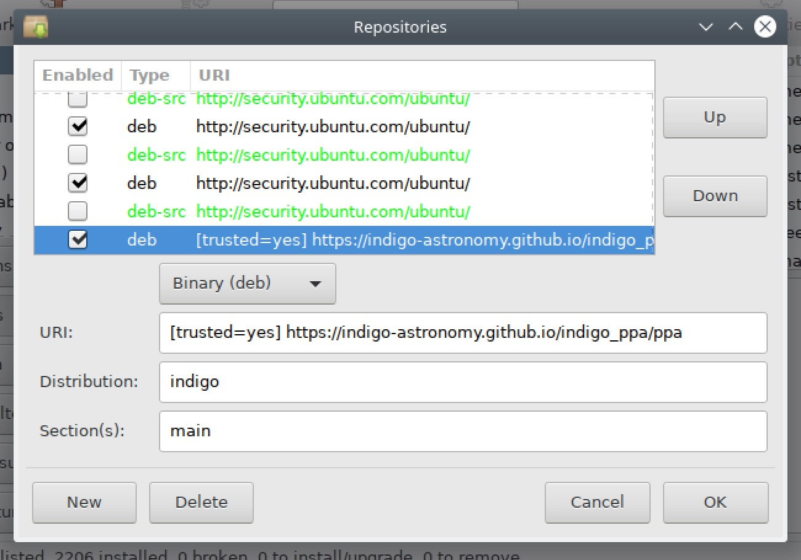
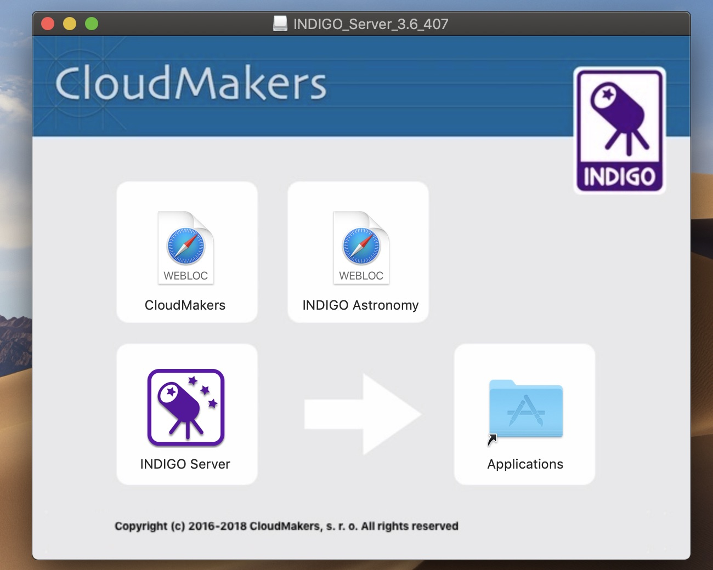

Downloads
You can download INDIGO distributions for Linux, macOS and Windows here.
You can download INDIGO distributions for Linux, macOS and Windows here.
Binary distribution of INDIGO Infrastructure or INDIGO Control Panel can be installed on Linux either automatically by apt-get or manually by dpkg.
To setup automatic installation and subsequent updates, you need to add our repository URL to APT sources list. To do it from command line, create the file /etc/apt/sources.list.d/indigo.list as root with you favourite editor, e.g. like this
$ sudo vi /etc/apt/sources.list.d/indigo.list
add the following line
deb [trusted=yes] https://indigo-astronomy.github.io/indigo_ppa/ppa indigo main
and execute the following commands
$ sudo apt-get update
$ sudo apt-get install indigo
$ sudo apt-get install ain-imager
$ sudo apt-get install indigo-control-panel
To do it from e.g. Synaptic package manager, execute it, go to Settings > Repositories, click new and fill URI, distribution and sections with the following text:

Once done, click Reload and search for indigo packages.
Relase notes are available in CHANGELOG.md
To install INDIGO manually, download one of the following packages for your operating system and install it with a command like this:
$ sudo dpkg -i --force-all ~/Downloads/indigo-2.0-XX-YYY.deb
One can also install INDIGO Control Panel, a GUI tool for managing and confiuring INDIGO Infrastructure:
Ain is an INDIGO imager application:
To install INDIGO on Apple computer (macOS 10.10 or later), download and open the following package:
and drag & drop INDIGO Server application to Applications folder:

For more INDIGO compatible applications including INDIGO Control Panel and INDIGO Dashboard for macOS visit Cloudmakers macOS software page.
INDIGO Control Panel is a GUI tool for managing and confiuring INDIGO Infrastructure:
Ain is an INDIGO imager application:
INDIGO to ASCOM bridges are replaced by the INDIGO Alpaca Agent (indigo_alpaca_agent, README is here). It requires Ascom Remote (Alpaca) to be istalled on the Windows host. It supports almost all ASCOM hardware classes with the exception of ObservingConditions and SafetyMonitors, which can not be easily mapped to the existing INDIGO devce classes.
If you still want to install ASCOM drivers for INDIGO server on Windows computer, download and install the following packages:
Make sure that you have all prerequisites installed. On Ubuntu / Debian / Raspian use:
$ sudo apt-get install build-essential autoconf autotools-dev libtool cmake libudev-dev libavahi-compat-libdnssd-dev libusb-1.0-0-dev fxload libcurl4-gnutls-dev libgphoto2-dev libz-dev git curl
It is advised to remove libraw1394-dev as the build may fail if it is installed
$ sudo apt-get remove libraw1394-dev
On macOS install XCode and download and build autoconf, automake and libtool (use tools/cltools.sh script).
If you're ready, get the code and built it
$ git clone https://github.com/indigo-astronomy/indigo.git
$ cd indigo
$ make all
$ build/bin/indigo_server indigo_ccd_asi [other drivers]
and connect from INDIGO Control Panel, any INDI client or WEB browser to port 7624...